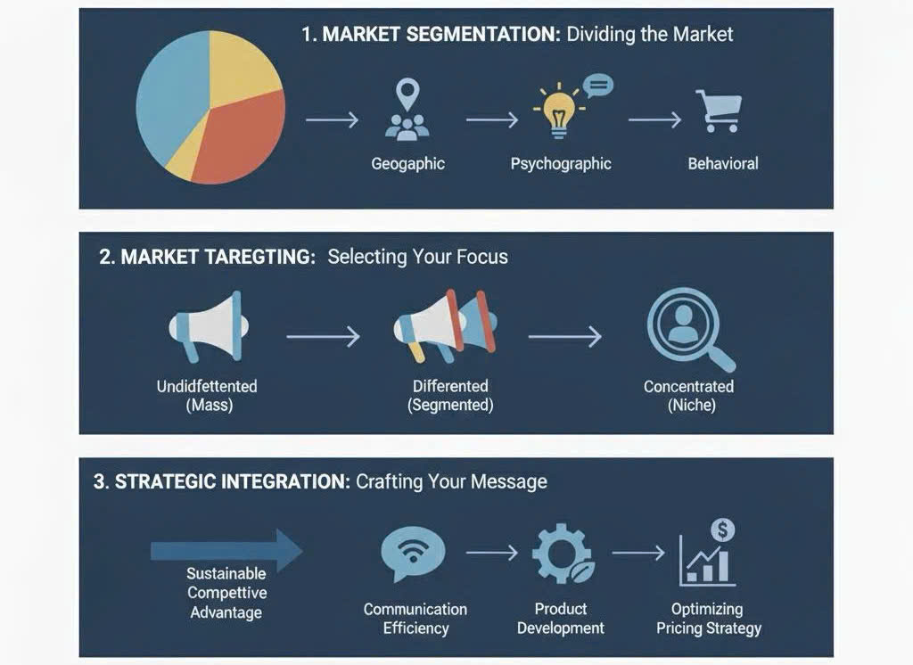

Market Segmentation and Targeting: Keys to Effective Audience Reach
In today’s hyper-competitive and saturated marketplace, the notion of marketing a product to "everyone" is a recipe for strategic failure. Effective market strategy demands precision. The powerful combination of Market Segmentation and Targeting provides the essential framework for businesses to move beyond generic marketing and connect directly with the specific groups of consumers most likely to value and purchase their offering, thereby maximizing marketing efficiency and return on investment (ROI).
1. Market Segmentation: Dividing the Whole into Profitable Parts
Market Segmentation is the process of dividing a broad consumer or business market, which typically consists of existing and potential customers, into subgroups of consumers (segments) based on some type of shared characteristics. The core assumption is that consumers within a segment will respond in a similar way to a given marketing mix (product, price, promotion, and place).
The Four Primary Bases for Segmentation:
Strategic segmentation is typically conducted across four key dimensions:
- Geographic Segmentation: Dividing the market based on physical location, such as nation, region, city size, or climate. This is crucial for businesses whose products are affected by local tastes, weather, or distribution infrastructure.
- Demographic Segmentation: Dividing the market based on measurable characteristics of a population, such as age, gender, income, education, family size, occupation, and religion. This is often the easiest and most common approach because data is readily available.
- Psychographic Segmentation: Dividing the market based on lifestyle, values, attitudes, interests, and personality traits. This seeks to understand the "why" behind purchasing decisions, moving beyond simple demographics to capture psychological motivators.
- Behavioral Segmentation: Dividing the market based on customer knowledge, attitudes, usage rates, loyalty status, and response to a product. This is arguably the most powerful base, as it focuses on actual consumer actions, such as heavy versus light users, or brand advocates versus switchers.
For the strategic investor, analyzing a company’s segmentation strategy reveals how deeply it understands its customer base and how effectively it has focused its resources. Poorly defined segments lead to marketing expenditure leakage.
2. Market Targeting: Selecting the Battleground
Targeting is the process of evaluating the attractiveness of each market segment and selecting one or more segments to enter. A segment’s attractiveness is judged not only by its size and growth rate but also by its structural factors, such as the level of competition (analyzed via Porter’s Five Forces) and the firm’s available resources.
Three Core Targeting Strategies:
Firms must choose a strategy that aligns with their resources, product offering, and competitive position:
- Undifferentiated (Mass) Marketing: The firm decides to ignore market segment differences and target the whole market with one offer. This strategy relies on mass production, distribution, and promotion. While cost-effective, it is rarely successful today because it fails to satisfy any specific niche completely.
- Differentiated (Segmented) Marketing: The firm targets several market segments and designs separate offers for each. This strategy aims for higher total sales and a stronger position within each segment (e.g., a car manufacturer producing different models for different income brackets). While expensive, this often achieves higher market share and customer loyalty.
- Concentrated (Niche) Marketing: The firm goes after a large share of one or a few smaller segments or niches. This is highly effective for smaller companies or startups, allowing them to focus their limited resources on serving the specific needs of a narrow customer base extremely well, often building high brand equity and insulation from larger competitors.
The targeting decision is fundamentally a strategic choice about resource allocation—where the firm can generate the most profitable and sustainable sales volume.
3. Strategic Integration: The Path to Effective Reach
The true power of segmentation and targeting is realized through their integration with the entire marketing mix. Segmentation provides the blueprint, and targeting selects the specific destination, allowing the firm to craft a highly effective message.
- Enhancing Communication Efficiency: By defining the target audience, marketers can choose the most relevant media channels (e.g., using TikTok for Generation Z audiences versus LinkedIn for B2B executives) and customize their language and imagery. This reduces marketing waste and ensures that advertising dollars are spent on the most receptive consumers.
- Improving Product Development: Precise segmentation allows product developers to identify unfulfilled customer needs within a specific niche. This leads to the creation of highly relevant, differentiated products—a core driver of pricing power and competitive advantage. For instance, discovering a segment of consumers who value sustainable, locally-sourced packaging allows a company to differentiate on these attributes.
- Optimizing Pricing Strategy: Understanding a target segment’s income level (demographics) and their price sensitivity (behavioral data/psychographics) is crucial. A highly differentiated product targeting an affluent, brand-loyal segment can command a significant price premium, maximizing profit margins.
In conclusion, Market Segmentation and Targeting are not merely tactical marketing exercises; they are strategic imperatives that dictate a company’s focus, resource deployment, and long-term profitability. By systematically dissecting the market and selecting the most attractive battlegrounds, businesses ensure that their efforts are not scattered, but precisely aligned to achieve maximum effective audience reach and sustainable value creation.
Resource: Hai Dang - Bachelor in Vin University